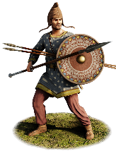
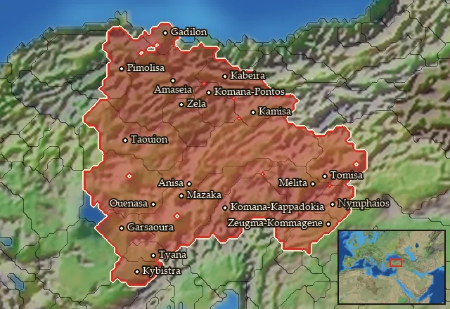

RTR: Imperium Surrectum
RTR: Imperium SurrectumCappadocian Light Infantry


Class: spearmen · Category: infantry · Men per unit: 40
Stats
| Rank in roster | Rank in roster | Rank in roster | Rank in roster | ||||||||
|---|---|---|---|---|---|---|---|---|---|---|---|
| Men per unit | 40 | ███······· 28% | Attack | 10 | ███······· 27% | Charge bonus | 9 | ███······· 33% | Defence | 29 | ████······ 41% |
| · armour | 2 | █········· 13% | · defence skill | 25 | ███████··· 74% | · shield | 2 | ███······· 26% | Morale | 11 | ████······ 40% |
| Discipline | impetuous | Training | trained | Recruitment cost | 1,595 dn | ██········ 24% | Upkeep per turn | 584 dn | ████······ 36% | ||
| Turns to recruit | 2 |
Weapons
| Primary | Secondary | Primary | Secondary | Primary | Secondary | Primary | Secondary | ||||
|---|---|---|---|---|---|---|---|---|---|---|---|
| Attack | 10 | 10 | Charge bonus | 9 | 11 | Type | thrown · blade | melee · blade | Damage | piercing | piercing |
| Projectile | javelin | — | Range | 50 | — | Ammunition | 4 | — | Attributes | prec · thrown | light_spear · spear_bonus_8 |
| Min delay between blows | 25 | 25 |
Defence
| Primary | Secondary | Primary | Secondary | Primary | Secondary | Primary | Secondary | ||||
|---|---|---|---|---|---|---|---|---|---|---|---|
| Total | 29 | — | Armour | 2 | — | Defence skill | 25 | — | Shield | 2 | — |
| Material | flesh | — |
Condition, terrain and upkeep
| Hit points | 1 · mount 6 | Ground: scrub / sand / forest / snow | 0 / 0 / -1 / 0 | Heat penalty | 0 | Charge distance | 30 |
| Fire delay | 0 | Food consumed (low / high) | 60 / 300 | Mass per man | 0.84 | Formation: close / loose | 1.1 x 1.3 / 2.2 x 2.6 · 5 ranks · square |
| Men per unit | 40 as the unit file states — the game multiplies this by your unit size |
In battle: Can sap · Very good stamina
The full attribute list (4)
sea_faring, hide_forest, can_sap, very_hardy
Who can recruit it
A core roster unit for one faction, which can raise it anywhere it holds the right building:
Any faction holding one of the provinces below can field it.
Exactly what a settlement must have, route by route (7)
| Building | Also requires | Building | Also requires | Building | Also requires | Building | Also requires |
|---|---|---|---|---|---|---|---|
| Region Information Scroll | Garrison Building or Tier 1 Military Industrial Complex · Cappadocian area of recruitment · Any Government (Dependency, Indirect Rule or Direct Rule) | Tier 2 Colony not built | Indirect Rule | Garrison Building or Tier 1 Military Industrial Complex · Tier 1 Colony | Indirect Rule | Garrison Building or Tier 1 Military Industrial Complex · not Greek area of recruitment · Tier 1 Colony | Direct Rule | Garrison Building or Tier 1 Military Industrial Complex · Tier 1 Colony |
| Direct Rule | Garrison Building or Tier 1 Military Industrial Complex · not Greek area of recruitment · Tier 1 Colony | Homeland | Garrison Building or Tier 1 Military Industrial Complex | Homeland | Garrison Building or Tier 1 Military Industrial Complex · not Greek area of recruitment |
Areas of recruitment

| Zone | Provinces | ||||||
|---|---|---|---|---|---|---|---|
| Cappadocian | 19 |
Description
While history often remembers Cappadocia for its formidable cavalry, when war comes to this land, the core of its regional defence and local levies relies on the hardy men of its interior villages who take up arms to fight as flexible light infantry. Though not strong enough to serve in the main battle line, they perform extremely well in flanking manoeuvres, skirmishes, and chasing after enemy light units. When thus pelting the enemy with their javelins, Cappadocian Light Infantry are most capable of using their home region's mountainous terrain to their advantage. Indeed, their main weapon is the javelin, and they go into battle with a bundle of these, along with short spears, daggers, and small shields for their protection. After all, Cappadocia, the land of beautiful horses, also needs beautiful infantry in its armies to survive against the empires that border its lands and threaten its autonomy.
Historical background
Cappadocia’s military reputation was demonstrated during the Wars of the Diadochi and against the great empires of the East. At the Battle of Gaugamela (331 BC), Cappadocian forces proved their martial skills by overwhelming Alexander the Great's Asian and Greek mercenary cavalry, only being stopped when the elite Thessalians halted their advance (Arr. Anab. 3.7-16). Following the collapse of the Achaemenid Empire, Eumenes of Cardia was appointed satrap of the region. To secure his fragile new domain, Eumenes distributed cities to his associates and famously raised thousands of local troops through tax exemptions and gifts. Significantly, both Eumenes and the subsequent Seleucid Basileis aggressively colonised the Cappadocian interior, but unlike in other regions of Asia Minor where the Greeks formed great poleis, Hellenistic settlement in Cappadocia took the form of fortified rural villages. Over the decades, these Greek and hybridised settlements integrated with the surrounding native Anatolian population, creating a fertile and deeply militarised recruiting ground for regional rulers (Cohen, The Hellenistic Settlements in Europe, the Islands, and Asia Minor (1995), pp. 43-4).
For centuries, Cappadocia became caught up in geopolitical power struggles between the dominating empires of the time. During the Seleucid and Pergamene era, its local rulers like Ariarathes III and IV focused on maintaining good relations with western powers, shifting alliances between the Seleucids to Pergamon and Rome to survive (182-79 BC; Polybius, 23.9, 24.1, 14-15, 25.2, 27.7). Later, during the 2nd and 1st centuries BC, the region was conquered and ravaged by Mithridates VI of Pontos. He used a combined strategy of marriage (it is quite likely that queen Laodike, the wife of Mithridates V of Pontos, belonged to the dynasty of the Cappadocian Ariarathids), assassination, and the installation of puppet kings (Mithridates placed his own son, Ariarathes IX, on the throne of Cappadocia) to dominate Cappadocia and challenge the status quo (Ballesteros-pastor, “The Meeting Between Marius and Mithridates and the Pontic Policy in Cappadocia”, in: Cedrus 2 (2014), pp. 225-39). Once Mithridates was defeated, the region gradually transitioned to Roman rule. After decades of civil war, noble disaffection, and Roman interventions, the kingdom was heavily indebted until its last king, Archelaos, restored economic stability (Strabo, 12.537, 14.671; Josephus, Jewish Antiquities 16.131). Archelaos was eventually summoned to Rome, where he was put on trial for suspected trouble but was exonerated, eventually dying of old age (Diodorus, 57.17; Suetonius, Tiberius 37; Tacitus, Annals 2.42; Philostratus, Vita Apollonii 1.12). Cappadocia was then annexed into the Roman Empire under Emperor Tiberius in 17 AD.
As a basis for this unit’s equipment in RIS, finally, we might cite Herodotos, who writes: "The Paphlagonians in the army had woven helmets on their heads, and small shields and short spears, and also javelins and daggers; they wore their native shoes that reach midway to the knee. The Ligyes and Matieni and Mariandyni and Syrians were equipped like the Paphlagonians. These Syrians are called by the Persians, Cappadocians" (Hdt. 7.72.1).